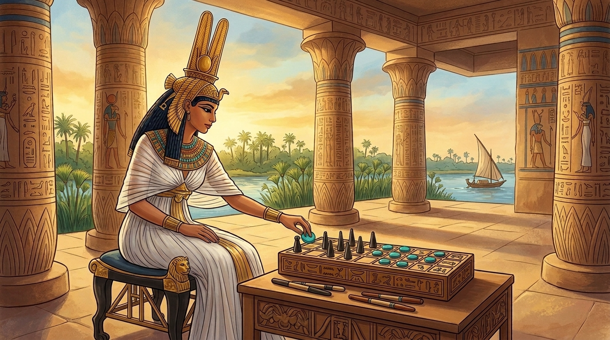
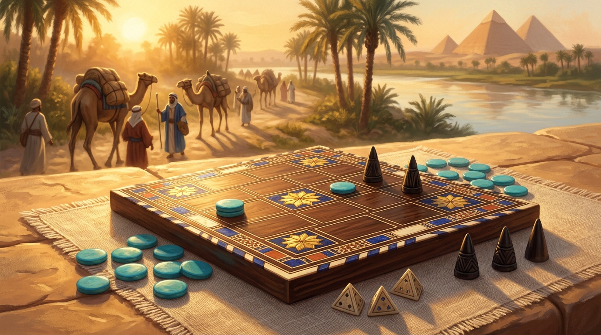
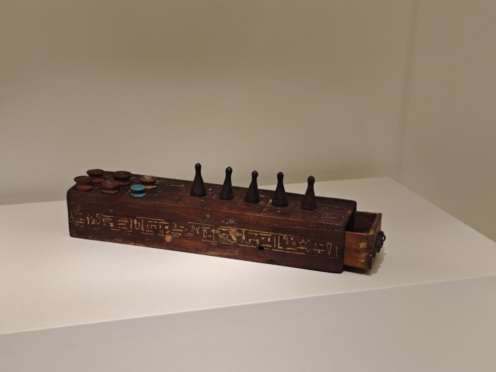
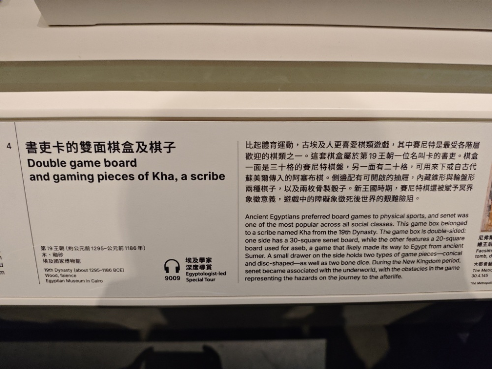

正面 · 塞尼特棋（3×10 蛇形冥界赛道）
第 19 王朝书吏卡（Kha）珍藏复原 · 正面 30 格塞尼特棋 / 反面 20 格阿塞布棋
双方各执 5 枚棋子（圆锥 vs 轮盘），沿 3×10 的“反 S 形（Z 字形）”蛇形赛道前进，率先将本方全部 5 枚棋子移出棋盘者获胜。
阿塞布棋（又称“二十格戏”）由苏美尔“乌尔皇家局戏”传入古埃及。双方各 5 枚棋子从场外排队出发，率先将全部 5 枚棋子冲出赛道者获胜。
一格严格只能放一枚棋子，绝对不能叠子。第 26、28、29、30 格都是安全格，一旦有人站着，别人既进不去也换不走。此时按以下顺序判定：
有其他合法走法时你当然可以躲开（第 25 格之前也不能直接跨过 26 格掉进水之屋），但在两种经典残局下会被迫落水：
落水后优先送回第 15 格「重生之屋」；如果第 15 格已被占（无论己方还是对手），则从 14 → 13 → … → 1 顺延退回最近的空格（若 1–14 全满则顺延至 16–25 最近空格）。
是的，没有连击次数上限！ 掷出 1（25%）、4（6.25%）或 5（6.25%）都会送额外投掷一次，单次触发连击的总概率高达 37.5%。只要一直掷出 1/4/5 就能连续行动，平均每回合单人会投掷约 1.6 次。
开局先手（圆锥方）占 1、3、5、7、9 格，后手（轮盘方）占 2、4、6、8、10 格。这是古埃及人精妙的先后手平衡补偿：后手天然拥有 5 格整体身位红利和第 10 格领跑位，而先手掌握先动权（且有 37.5% 概率首回合直接连击，例如开局掷 1 就能把第 9 格与第 10 格换位），两者正好互相制衡。
顶部控制栏支持切换 🛡️ AI 先手（我执轮盘） 以及 ⚡ 快速局（先出 3 子胜）；每步移动均有抛物线动画与上一步起止留痕，也可随时点击右下角 📝 对局记录 回看完整流水账。
是的！ 出土的古埃及与乌尔四面体金字塔骰共有 4 个顶点，其中 2 个涂金亮角（+1）、2 个暗角（0），掷出后看朝上的尖角是否涂金，所以每枚亮暗概率正好 50%。4 枚全为暗角时就是 0 点（概率 1/16 = 6.25%），本回合直接空过换对方。
等待区就是起跑线外（第 0 步）：掷出 1 点进私1，掷 2 进私2，掷 3 进私3，掷 4 直接一步跨到私4（✦ 神圣格，立刻获得再掷一次！）。走完 私4 后拐入中间公共赛道 公1→公12。
完全没有！ 无论对手连排几枚棋子，你都可以直接从头顶跨过去，也可以直接落点撞飞它。阿塞布棋仅有的两处安全庇护是：① 各自 4 格私人区（私1–私4）；② 公共区 3 个星芒无敌格（公4、公8、公12，带 ✦）。
必须不多不少、恰好落到第 17 步（超出 公12 正好 1 格）才能出盘，不能多走！ 但你不需要非得先停在 公12，从 公9–公11 都可以直接一步精准冲出：
| 当前位置 | 恰好掷几点直接出盘？ | 掷大了会怎样？ |
|---|---|---|
| 公12（16步 · ✦ 无敌） | 必须掷 1 点（25%） | 掷 2 / 3 / 4 超步不能动 |
| 公11（15步） | 掷 2 点 直接冲出（37.5%） | 掷 1 进公12；掷 3 / 4 超步 |
| 公10（14步） | 掷 3 点 直接冲出（25%） | 掷 1–2 前进；掷 4 超步 |
| 公9（13步） | 掷 4 点 直接冲出（6.25%） | 掷 1–3 正常前进 |
进阶技巧：站在 公11 出盘概率高达 37.5%（最容易一发冲出），但可能被追杀；站在 公12 出盘概率 25%，却拥有 ✦ 无敌金身——残局进退取舍就在一念之间！
塞尼特落到对手孤子上只是双方互换位置；而阿塞布在公共区落到对手非 ✦ 棋子上时，会直接把它💥 撞飞踢回场外等待区（第 0 步），对方必须从零重新排队起步，对抗节奏更刺激！
古埃及人用 4 根双面木棍或 4 枚二面金字塔骰，本质上都在做 4 次独立的等概率抛掷，结果服从经典的二项分布 B(4, 0.5)，总共有 24 = 16 种等可能组合：
| 亮面/平面数 | 组合数 | 出现概率 | 塞尼特步数 | 阿塞布步数 |
|---|---|---|---|---|
| 0 | 1 / 16 | 6.25% | 5 步 + 再掷 | 0 步（空过） |
| 1 | 4 / 16 | 25.00% | 1 步 + 再掷 | 1 步 |
| 2 | 6 / 16 | 37.50% | 2 步 | 2 步 |
| 3 | 4 / 16 | 25.00% | 3 步 | 3 步 |
| 4 | 1 / 16 | 6.25% | 4 步 + 再掷 | 4 步 |
策略启示：在两款游戏里，“2 步”都是最容易掷出的点数（高达 37.5%），其次是 1 步与 3 步（各 25%）。因此阿塞布棋中，停在对手前方 2 格最危险，而塞尼特棋中，保持棋子紧邻防换位尤为关键！
大祭司 AI 采用期望极小极大搜索（Expectiminimax）：对每一步合法走法，把下一回合 5 种可能掷出的点数按精确二项分布概率 B(4, 0.5) 全部展开，预判对手最可能掷出 2 点（37.5%）时的最优反击，选出数学期望得分最高的一步，单步思考仅需约 0.01 毫秒！
| 游戏 | 对阵双方 (A vs B) | A 胜率 | 平均回合 | 单步耗时 |
|---|---|---|---|---|
| 塞尼特 (30格) | 👑 大祭司 vs 随机 | 70.5% | 107.5 | 0.014 ms |
| 塞尼特 (30格) | 👑 大祭司 vs 🌱 入门 | 61.0% | 103.3 | 0.013 ms |
| 塞尼特 (30格) | 👑 大祭司 vs 🤖 标准 | 52.0% | 100.9 | 0.012 ms |
| 阿塞布 (20格) | 👑 大祭司 vs 随机 | 98.0% | 87.2 | 0.010 ms |
| 阿塞布 (20格) | 👑 大祭司 vs 🌱 入门 | 90.0% | 103.6 | 0.010 ms |
| 阿塞布 (20格) | 🤖 标准 vs 随机 | 99.5% | 93.2 | 0.001 ms |
结论：阿塞布棋绝不是纯靠运气的骰子棋——懂策略的 AI 对随机走法胜率高达 98%–99.5%！完整报告与复现脚本见项目内 AI_BENCHMARK.md 与 bench_ai.js。

塞尼特（古埃及语 znt）原意是“通过 / 穿越（Passing）”，诞生于约 5000 年前，比国际象棋还要早三千多年！它最初是法老与平民都爱玩的休闲棋（图坦卡蒙墓中就陪葬了 4 套，王后奈菲尔塔利墓壁画上还画着她独自与“看不见的命运”下棋）。
到了书吏卡生活的第 19 王朝（约公元前 1295–1186 年，拉美西斯时代），塞尼特被载入《死者之书》第 17 章，化身为亡灵穿越冥界“杜阿特（Duat）”的 30 道试炼——赢得这盘棋，灵魂就能通过审判，随太阳神拉（Ra）重见光明！
符号 ☥ 是古埃及最著名的生命之符（Ankh），象征冥界之王奥西里斯（Osiris）掌管的复活圣殿。棋子落水后回到这里重获生机，再次启程。
象形文字 Nefer 意为“美好与完美”，古埃及也称净化灵魂的圣所为“美丽之屋”。灵魂必须在此停下接受净化（因此规则要求必须准确停靠），才有资格踏入终极试炼。
象征宇宙诞生前的混沌之水（努恩 / Nun），也是混沌巨蛇阿波菲斯（Apophis）每夜伏击太阳神夜行舟的险滩。失足踩中这里，灵魂就会被汹涌冥河冲回第 15 格重生之屋！
古埃及人视“3”为神圣完满之数，象征由拉、奥西里斯、普塔等神明组成的三重审判团（也代表言、行、心三真）。灵魂需恰好掷出 3 点 通过考验。
对应太阳神合体拉-阿图姆（Re-Atoum）与正义女神玛阿特（Ma'at）的“双真理大厅”——灵魂在此称量心脏是否如真理之羽般纯洁，需恰好掷出 2 点 过关。
符号 𓂀 是天空与王权之神荷鲁斯（Horus）的护身神眼。抵达这里意味着灵魂已通过全部冥界试炼，在太阳神光芒指引下即将跃出冥界、获得永生（掷出任意点数即可出盘！）。

翻过棋盒，反面的阿塞布棋（Aseb / 二十格戏）其实是一场古老的文明交流见证！它并非埃及本土发明，而是在约公元前 1600 年沿着西亚商路，从两河流域苏美尔的“乌尔皇家局戏（Royal Game of Ur）”传入埃及的。
盘面上每隔 4 格出现的 5 枚星芒/玫瑰标记（✦），原本是美索不达米亚女神伊南娜 / 伊什塔尔（Ishtar）的八芒星徽章，代表幸运与神明庇护——停在上面不仅能免疫击杀，还会受神明赐福再掷一次！书吏卡把埃及本土的塞尼特与两河传入的阿塞布刻在同一只木盒两面，就像今天把象棋和跳棋合二为一，充满古人的生活巧思。
塞尼特棋在古埃及流行了整整 3000 年，但在罗马统治时期（公元 1–3 世纪）彻底失传，沉睡在沙土里一千多年。现代考古学家是怎么把这两款古棋“救活”的？
1980 年代，大英博物馆楔形文字专家欧文·芬克尔（Irving Finkel）破译了一块公元前 177 年的巴比伦泥板，上面清清楚楚写着 20 格棋的掷骰、进场与玫瑰格规则，成为复原阿塞布棋的铁证！
古埃及从未出土完整的塞尼特规则书，考古学家 Timothy Kendall 等结合四类线索复原：上百件实物棋盘与掷棍、古墓壁画里棋手头顶的“对话泡泡”、《死者之书》逐格冥界解说，以及埃及民间流传至今的 4 棍掷木游戏 Tab！
中国马王堆、海昏侯墓也出土了精美的汉代“六博”棋盘与 6 根竹箸，但因盘面拓扑更复杂且尚未出土完整《博经》全文，至今仍是未解之谜——古埃及人把棋局写进《死者之书》、巴比伦人刻进泥板，无意中为 3000 年后的我们留下了“通关密码”！
本游戏复原自古埃及第 19 王朝（约公元前 1295–1186 年）书吏卡（Kha）的双面木质釉砂棋盒（开罗埃及国家博物馆藏）。棋盒侧面带有可抽拉的小抽屉，内藏乌木圆锥形与釉砂轮盘形两种棋子及骨骰：一面刻着 30 格的塞尼特棋（Senet），翻过来另一面则是 20 格的阿塞布棋（Aseb）。


暂无走子记录，投掷后将自动记录双方每一步操作。
历时 24 回合，全部 5 枚棋子成功穿越赛道！